kaji apps
Current Android APKs, with versioned downloads and status. Check the SHA-256 after downloading. Status as of 2026-11-24. Previous builds are listed separately below.
Choose an app
Available now
simak 0.3.4
Delivered 23 Nov 13:04. Decision 2026-11-23: ship the most detailed variant only. The launcher icon is now a single 192px full-color PNG (rounded square, 0.3.4 strip); the five-density ladder, the adaptive-icon layer and the themed monochrome layer are removed. Root cause of the flat icon reported on 0.3.3: the shared generator drew the adaptive face as a flat one-color silhouette and Android 8+ launchers always prefer it over the color PNGs; with no adaptive or monochrome layer shipped there is no flat variant left to draw. Same art, corner radius, package, signer and five permissions as 0.3.3; no app-code change beyond icon resources, the manifest icon reference and the version bump. Patuh source gate, signed-build checks and the pre-publish byte gate on the packaged icon passed in run 45120511747; the published APK carries the single PNG (badge pixel-read as 0.3.4) and its SHA-256 matches the sidecar. Physical-phone rendering still to be confirmed.
SHA-256 8c0c9e18c2417b068b88a5939de71e2c3da73bf78c2656fdfbd15972b6258c37tuju 0.2.27
Published 26 Nov. The Mall Kelapa Gading routes are no longer a separate block: 12P, JAK.61 and JAK.59 start at the mall stop at the top of the map and join the corridor 10 and corridor 4 columns at their real stops. Green rings mark where each option gets off. Times are operator GTFS (26 Nov 2026), scheduled only. Fares, gates, the crossing between the two Sunter Kelapa Gading platforms and all walks are unverified. Not installed on a physical phone.
SHA-256 82168473e4b1d39a4803af17a674d0bfc66fedaff000a9e29741a3b53265720ftindak 0.5.23
Finished rows (completed, canceled, archived, deleted) no longer show in the app or widget, and repeated rows show once. The home screen groups items under the feed section titles with counts; a menu entry shows finished items as history. Single full-color 192px launcher icon (no density set, adaptive or monochrome layer). Same signer, permissions, pairing key and real feed. Four new unit tests, full 155-test suite green on CI; actual signed APK inspected. Physical-phone behavior not yet checked.
SHA-256 e1cccdab547532e1b8648e93268bd4a9d36af56a0d6c8a7a530926d7851a8bfetengok 0.8.0
New viewers: PDF page by page on Android's own PDF engine (prev/next/zoom; no text selection, search or forms; password PDFs refused); basic SVG drawing of shapes, paths and plain text that lists what it skips (CSS, gradients, filters, clips, images); and a text preview of .docx, .xlsx and .pptx read from their XML in memory (no layout, charts or images). Old .doc/.xls/.ppt and OpenDocument still open as hex; a PDF inside a ZIP opens as bytes. No new permissions or libraries, same signer. Checked by unit tests and an Android emulator run on synthetic files; not yet tested on a physical phone or with large real-world documents.
SHA-256 9ca46f5afc3673183ffa0657a2c568325aa0f140825583824807f43abd4c8ea7jumpa 0.1.1
Offline people notes, promises and organization context. Kunjung synthetic encounters open an editable preview, then explicit demo-only existing/new-person choice before adding a dated note. Cancel is no-write; duplicate imports are safe; archived people stay archived; real data stays untouched. Receiver Android-intent tests passed; browser-to-native tap is not yet proven. No real-data handoff or automatic sync. Same signing identity, zero permissions. Physical-phone behavior unverified; update in place, do not uninstall or clear data.
SHA-256 8d2f7e055f4168c7202564dbdd27d39f19e696711a7351f433ab7d0cfa906aeckokok 0.2.3
Same app as 0.2.2 with one 192px launcher icon (no density variants) and the 0.2.3 badge. Same package and release signer; update in place without uninstalling or clearing data. No feature changes.
SHA-256 adcf86e32f1cda9836eccc39db9e60d27950e6b16a9127282ea4dd7c558849b7sanggup 0.2.4
Published 22 Nov at 18:50. Actual phone install or upgrade remains unverified. Catches up with the current web prototype: six new Coding stages from IDSW 2026 talks (test-cost comparison, measured CI spend, authorization as explicit permission, deterministic race reproduction, cross-app call counting, stateless-scope mapping) plus new Coding sources are bundled offline; sign-off and plan share links open in a browser. Code 10, zero permissions and same signing identity. Published bytes checked against the sidecar checksum. The older synthetic upgrade proof does not cover this release. Browser and Android progress stay separate. Update in place, never clear storage.
SHA-256 278ddf2302c943cee35c1f20e7ce326e1c4497bfe216ad7d8e6f31ed82808d8aunggun 1.0.3
Native Kotlin recode of the GitHub-release updater (supersedes the Flutter fork; same package and signer, installs in place). Prerelease: GitHub-source tracking with per-app prerelease toggle, manual checks that respect GitHub rate limits, stock installer, notifications, logs. No background scheduled checks yet; silent-update behavior verified on a Samsung A24 only.
SHA-256 253db3c5a5b84fa606af919dbbb56502eee2c433db6496b1b4073be90181981dirvan 0.1.0
Interactive introduction and project map with reviewed content, paper credits and source links. Website and Android build available; not verified on a physical phone.
SHA-256 fd2d07903dee74e4ff976f1bf34918df9190429a2879cb3d3d71d2a161b3b093kemas 0.3.3
Same app as 0.3.2 with one 192px launcher icon (no density variants) and the 0.3.3 badge. Same package and release signer; update in place without uninstalling or clearing data. No feature changes.
SHA-256 099077952ba30fbd547f395a53a11de8dd709888c054dc1da1c85d0e19513473cabang 0.3.2
Threaded, collapsible view for Delta Chat conversations.
SHA-256 a9e20a98448c82d8db87299c7cee791a191de037426d452e9627f7d25aaa254amenit 0.2.2
Phone-usage totals with readable stacked compact time and percentage. Useful 2-3-column content and tap-open checked in emulator, not physical Samsung. Same package, signer and permissions.
SHA-256 b78d11a8b130487fd7c50fc7ab7711e8b8ec280ec0d49538c31049a005451c52jin 0.5.3
Same app as 0.5.2 with one 192px launcher icon (no density variants) and the 0.5.3 badge. Same package and release signer; update in place without uninstalling or clearing data. The robot head is now amber so the icon passes the full-color rule. No feature changes.
SHA-256 20bce9a29e12f156be57aac6dca39c97abaa69f8ae144e547b81a25b83e31681unggah 1.1.4
Pushes a ZIP to a chosen GitHub repository over SSH. Ships one 192px launcher icon (no density variants) with the 1.1.4 badge. Same com.vanipy.unggah package and release signer; update in place without uninstalling or clearing data. No feature changes.
SHA-256 7b17f5fb12527b577711fc7375302b81b88095083e0b6fbede94b95e54a4164csapa 0.5.9
Helper for event moderators: counts people on camera, counts raised hands per question round and picks a random person.
SHA-256 a74262ded07e711be75576e6a72ce13da17744ff7f173c4d429b2d9fbb07c2ddonda 0.2.3
Same app as 0.2.2 with one 192px launcher icon (no density variants) and the 0.2.3 badge. Same package and release signer; update in place without uninstalling or clearing data. No feature changes.
SHA-256 810969725d10a47352ad04e0a57ed7fd2ef67ddb96fb3f46c5feaffbbe700e25bidik 0.1.9
Published test APK, code 10, same signing identity as 0.1.5-0.1.8. The motion dot is its own toggle now: MOTION keeps controlling capture and the .motion.csv sidecar, DOT only controls the on-screen dot, both off by default, and either one starts the sensor stream. Each recording lists its motion CSV with its own view, share and delete; deleting a video removes the sidecar. One 192px full-colour launcher icon replaces the density ladder, adaptive XML and the monochrome layer that themed-icons launchers flattened. Emulator record run and unit tests green on the release pipeline; source gate 22/22 including the full-colour icon rule; checksum matches the published v0.1.9 APK. Shares hand the receiver a temporary read grant that dies with the receiver's process - re-share from the list rather than reopening from the receiver's history. Signed prerelease APK; update in place, never uninstall or clear data.
SHA-256 085c2f8e543f982e3c058cee6ff9756849a23b011ee278924129c016558fde83denyut 0.7.3
Offline notes and reminders. Narrow widgets show a complete countdown and clock on separate lines, retaining notes count. Font-aware compact fallback preserves time and notes; long one-row titles may shorten. Emulator host, render and tap-open checks passed. Narrow layout checked on Samsung; other spans and tap behavior are not universally phone-proven. Same package, signer, permissions and data. Local-model loading remains disabled. Source: fcd23d1.
SHA-256 bfbc3754be450340077380c6a0fcc50a93f749abafc535f8941be78fc3362b73saku 0.1.3
Experimental local vault for dummy data only, not real passwords. Useful static locked-status strip and quick-open at 2-3 columns, qualified in an emulator. No real vault-state proof. DeltaChat sync is unfinished and excluded from this release. Not tested on Samsung.
SHA-256 911838f37da487df056abbee06591775759cbfcaea16730cbba3189c87e0ecf7tumbuh 0.2.2
Offline manual commitments, inbox, space and people. Useful title and first step at2-3columns, full details larger. Emulator-qualified, not Samsung-tested. No inbox/contact access or automated sending.
SHA-256 41a33407189ef2a7a81acd79373939f3a6cf07a91930dc299871b55831df6bcdnada 0.1.2
Deterministic recipe-to-MIDI generator, not a conversational composing workshop. Signed Android release loaded and saved through its real UI in an emulator. Physical-phone behavior remains unverified. Supersedes 0.1.1; the production test-save trigger is removed.
SHA-256 1081313eadbdb0b942e8ff4f333f40597ea58f3d65fc97663899987507233a6atagih 0.1.0
Offline invoice tracker with due dates, manually recorded payments, recoverable archive and JSON/CSV exports. No permissions, bank connection or payment processing. Synthetic emulator lifecycle checked create, sent, partial/full payments, paid, archive/restore and CSV contents; physical-phone behavior remains unverified.
SHA-256 168e60b8c362572d4558d06f22cc9101aa5b4099e9f16a24fd67f72c9fc2d0b0sambung 0.1.0
Offline request briefs, clipboard/share handoff, reply-shape checks and local history. You carry the text to an assistant and review the result before sharing it back. No network permission, provider account connection, API key, subscription access or automatic result application. Physical-phone behavior remains unverified.
SHA-256 4eda63a9b158916b0b6d714f59fe636467111d575fc3059f4b735b9b76a7d59dkapan 0.2.5
Drops the 'yours' prefix from widget pick rows at the owner's request: every row in the picks list is his, so it separated nothing. The generic fallback rows keep their 'dev'/'film' tags, the one place two kinds mix in the widget. Otherwise 0.2.4: full-page scrolling app screen, uncapped countdown panel and widget list, days-and-hours widget countdowns restated on the ~30-minute OS tick plus app opens. One permission (INTERNET). Unit tests pass; widget render mocked; awaits on-phone confirmation.
SHA-256 44eb1fe0a83eeb09fd71b0d8de969669a2122a5dccc4323a009747b3ab0d2e49Previous builds
simak 0.3.3
Superseded by 0.3.4 (single-variant icon). Delivered 23 Nov 12:35. Launcher icon replaced with the binoculars-and-star design Irvan picked from four candidates, regenerated through the shared badge script (full-width 0.3.3 strip, family corner radius, adaptive and themed layers). Patuh source gate, signed-build checks and the pre-publish byte gate on the packaged icon all passed in run45118491453; the published APK carries the new icons at every density (pixel-verified against the generator output) and its SHA-256 matches the attached checksum. Same package, signer and permissions as 0.3.2; no app-code change beyond the icon and version. Physical-phone behavior unmeasured.
SHA-256 48220e23a76a846134a476c469e8b13fd208d01a25c9ea58f8aed1e0bda7083asimak 0.3.2
Delivered 21 Nov 12:28. Official Day 1 17:05 panel title and all three panelists are readable in the actual published APK, without overlap. Full capture run44869630641 and upgrade qualification44868142748 passed. Upgrade from0.3.0 retained the same Bagas note and readable highlights. Same package, pinned signer and five permissions; code6, lowercase label and published SHA-256 independently checked. Physical-phone behavior and battery unmeasured; no new star/alarm carryover proof. Web cache repair is separate and already delivered.
SHA-256 fcf5cfa733aafe8bb4e3544e141d5a29be7bab0eff0c16c56c9f0d3a1b9cc897simak 0.3.0
Historical0.3.0, superseded by0.3.2. Delivered21Nov11:15. Six lightning-talk cards share14:30-15:30. Name hints rank exact/reordered-full matches before two-sided token coverage and normalized Levenshtein, with alphabetical ties; partial-name eligibility unchanged. Published-APK emulator qualification passed. In-place legacy note migration and explanation visually proven; legacy stars/alarms have code-equivalent carryover only, not runtime migration proof. Optional legacy block retains unsplit state without assigning it to a speaker. Physical0.3.0 behavior and battery unmeasured. Same five permissions/pinned signer/code4, published hash matches sidecar. Contact names stay on-device; hints are not identity proof.
SHA-256 0d281c7c3c0fa24fd7a517aa0b9d2277d22e9c830f4009f7e6a6e4fdfe8cf926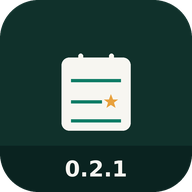
simak 0.2.1
Historical0.2.1, superseded by0.3.0. User confirmed agenda highlighting on phone21Nov10:48 for this version. Expanded emulator suite covered affiliation/multi-speaker parsing, persistence, notification and reboot rearm. Partial thresholds retained. Phone reminder firing and battery unmeasured.
SHA-256 10da3774c71f9d63e6a1eeae828ff4bd7a76deedf6450a3dd4da20b8cbe86cb0simak 0.2.0
Historical0.2.0 release. Limited synthetic plain-speaker check passed, but affiliation and multi-speaker card joins plus affiliation parsing were defective. Superseded by0.2.1. Partial-name matching remains intentional.
SHA-256 25bfddc50b0d8ed4abf31346a08987bd1580f3f24265b2533ad14a899410214a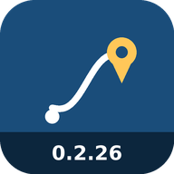
tuju 0.2.26
Historical 0.2.26, superseded by 0.2.27 (it drew the Mall Kelapa Gading routes as a separate block). Published 26 Nov. Corrects the Mall Kelapa Gading routes home: the mall is a TransJakarta stop served by 12P and four JAK feeders (0.2.25 wrongly said there was no stop). The main option is 12P to Sunter Kelapa Gading, then corridor 10 toward PGC to Pemuda Pramuka, a short walk from Pramuka BPKP 2. The JAK.61 and JAK.59 options with the 4 stay as alternatives. Stops and times come from the operator GTFS (26 Nov 2026), scheduled only; fares, gates, crossings and walks are unverified. Physical phone and real GPS unverified.
SHA-256 6c4d8a51d754bb1d3cca8c692096f674a9e062e0981acc61a3fc885aa983ac52tuju 0.2.25
Historical 0.2.25, superseded by 0.2.26 (its Mall Kelapa Gading routes missed the 12P stop at the mall). Published 26 Nov. Adds two ways home from Mall Kelapa Gading to the combined map and offline route notes: JAK.61 to Pulo Gadung 5 then the 4, or JAK.59 to Simpang Arion then the 4, both ending at Simpang Pramuka 2 near Pramuka BPKP 2. Stops come from the operator GTFS (26 Nov 2026) with scheduled times only; the fare, gate and crossing at each change are unverified. Physical phone and real GPS unverified.
SHA-256 e0e545a7ac191e5511aaeac92809e52c39ad28c0462016f3b96a9e8991119f4dtuju 0.2.24
Historical 0.2.24, superseded by 0.2.25. Published 24 Nov. Adds both towers to the combined map and offline readable route notes. Autograph uses the separate Tosari 3 outbound / Tosari 2 return walks; Centennial uses Denpasar Arah Barat / Timur on the existing corridor 9 spine. Includes stairs, restricted-entry, crossing, Cawang interchange and service caveats. Signed APK, package, checksum, icon and exact bundled map independently checked; no network permission. Physical Samsung installation and real GPS remain unverified.
SHA-256 2f12bcc9b42b57f19463ee678da40f60b306f9f6d0b2253a9390059b35d6c5edtuju 0.2.23
Historical 0.2.23, superseded by 0.2.24. Published 23 Nov. Adds a J.CO Reserve (AI Hotel Thamrin) destination pin beside Grand Indonesia on the 4C corridor: out via 4C to Tosari 3 (~700 m walk), home from Tosari 2 (~200 m), with dashed walk links forking off the Grand Indonesia stubs into a shared trunk across the clean gap row. Map, web page and bundled Android asset rebuilt and byte-checked; tests green.
SHA-256 1b06c7943e2cb264088950c4ab9c059a3ae3c1f2cc56d30d90ad1662fc38c55btuju 0.2.22
Historical 0.2.22, superseded by 0.2.23. Published 23 Nov. The walk-review screen's one-go review loop is now a transit route instead of driving: Google Maps transit directions with a fewer-transfers preference, every stop order checked on transit time, and the fewest-transfer order shown (5 transfers, about 9 hours in transit) with per-leg routes and transfer counts. Checklist, filters, answers and copy-back unchanged. Fully offline; physical phone and real GPS unverified.
SHA-256 9b9f9b61a20e255020eb6d31cf7bf9033fcaa46a3b837cfd1a32a445d61ad9d3tuju 0.2.21
Historical 0.2.21, superseded by 0.2.22. Published 23 Nov. The walk-review screen adds the one-go review loop: the nine physical stops (the twelve items collapse in Alam Sutera) in the shortest round-trip order from the Pramuka start, with per-leg and total road distance/time labeled as estimates. Checklist, filters, answers and copy-back unchanged. Fully offline; physical phone and real GPS unverified.
SHA-256 6a4e1d1c48a37ff473963cabacea520d435dbb91323cfc704107a0483eab4b15tuju 0.2.20
Historical 0.2.20, superseded by 0.2.21. Published 23 Nov. The walk-review screen is now grouped by route (S61 Alam Sutera, 9, 1, 7E + 6, 7F, S11) with filter chips, sorted nearest-first from the Pramuka home start, and a straight-line distance on each item. Confirmed / Not there / Partly answers, notes, on-device persistence and the copy-back results text are unchanged. Fully offline; physical phone and real GPS unverified.
SHA-256 ec5ba81c941bed055a3fd6e947554f88dd6af0d4bdbdd0b24f21e3f9d0bb4e1ctuju 0.2.19
Historical 0.2.19, superseded by 0.2.20. Published 23 Nov. Adds a walk-review screen: twelve on-ground checklist items with Confirmed, Not there or Partly answers and notes kept on-device, plus a copy-back results text to send back for map fixes, modeled on the Edit Map feedback. Also bundles the recent map fixes: overlap corrections, BINUS stop grounding, the straight 5M join and Megaria ring with transfer note, and the Kuningan Madya ring connection. Physical phone and real GPS unverified.
SHA-256 f31d825d0f92dc52612176f8a1325e93aaa9f6035af153c20861fc1d5d194feetuju 0.2.18
Historical 0.2.18, superseded by 0.2.19. Published 23 Nov. The two 5M direction columns now sit side by side like the S11 and S16 pairs, with the Bakoel Koffie note reconnected to both its stops. The S61 pair at Bundaran Senayan is widened, its header notes re-broken into three lines and reordered clear of the Ragunan pin, and the Kayu Putih Rawasari terminus stack has its space back. Physical phone and real GPS unverified.
SHA-256 a430545dc241137cda237f742cb9332d046a251f1197be14cdca664cde64e56atuju 0.2.17
Historical 0.2.17, superseded by 0.2.18. Published 23 Nov. The Bakoel Koffie and Grand Indonesia destination pins moved up beside the lines they belong to, with shorter walking links, and the whole S61 block sits right, under the Bundaran Senayan pair, with its walk links re-anchored. Physical phone and real GPS unverified.
SHA-256 ab5b146d561ac5208526c0c657ae36df87dc9baabcdb88d39f29718c51eab73atuju 0.2.16
Historical 0.2.16, superseded by 0.2.17. Published 23 Nov. The 7F branch and the Matraman 3 link now cross the 9/10 return line and the 4C outbound line with clear arcs, so neither reads as a join. The Cawang Sentral outbound note now says 10 and 9 use different GTFS platform IDs and that the paid-area interchange is not verified. Physical phone and real GPS unverified.
SHA-256 69409c3c21468bdac22053683019e1b4ff608fc876244ef6e6a0177ad923967dtuju 0.2.15
Historical 0.2.15, superseded by 0.2.16. Published 23 Nov. Central Park 9 and 10 now use two close parallel direction lines too: outbound on the right, the return on the left from GTFS trips 9-R02 and 10-R02 with their own stop names and order, not paired with the outbound stops. The two Cawang Sentral stops on the return are separate, and the interchange between them is unverified. Also clears the S61 link from its label. Physical phone and real GPS unverified.
SHA-256 f23e724b33e47f0f86a3c464b190af1e84044f8d8be1c67547920d0bd7b529f1tuju 0.2.14
Historical 0.2.14, superseded by 0.2.15. Published 23 Nov. Fixes on 0.2.13: the 5M branch now hops cleanly over the red 4C homebound line, the shared 4C and 5M middle line has its own stop markers and direction arrows, and the 6 stop labels beside the 4D return line sit clear of it. Physical phone and real GPS unverified.
SHA-256 813b02864611a8fc9f011e8e874cae895e771bdb9a33672801d78e7b65ef2da1tuju 0.2.13
Historical 0.2.13, superseded by 0.2.14. Published 23 Nov. Red 4C and purple 5M now use two close parallel direction lines like S11 and S61: outbound on the left with labels outside left, homebound on the right with labels outside right, and the shared 4C and 5M section as a middle line. Each direction keeps its own stop order; no stops are paired by distance. Existing walks and links are kept. Physical phone and real GPS unverified.
SHA-256 0a30edf1bc3756eea088727d0decbf0e33275e3e7f1fc9f0ece3316ce2cf315btuju 0.2.12
Historical 0.2.12, superseded by 0.2.13. Published 23 Nov. S11 and S61 are drawn as two close parallel direction lines, each with its own stop markers and labels outside, so no stop is shown as the same boarding point as one in the other direction. The Central Park walk splits into a walk to the outbound stop and a walk home from the return stop. Map is shorter. Physical phone and real GPS unverified.
SHA-256 58bacc1bf7604bf261b75631c272f2e912cb5c4a1fa392637f8e2ac8c3c91c29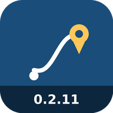
tuju 0.2.11
Historical 0.2.11, superseded by 0.2.12. Published 23 Nov. S11 and S61 stops now share a row only when they are the same named station on opposite sides; differently named stops keep their own rows, since distance alone does not show a shared boarding point. Also carries the label-clearance fixes, Central Park return leg and shorter layout. Red 4C and 5M out/return columns are not yet combined. Physical phone and real GPS unverified.
SHA-256 bd5b135b098f2d2068bded88a2527689e2c419e1cedff06b10afa24185e30f18tuju 0.2.10
Historical 0.2.10, superseded by 0.2.11. Published 23 Nov. Fixes route lines running through station labels around Galunggung, Setiabudi Integritas and Kuningan Madya, and a line through the 6 to 4 note. Also carries 0.2.9: shorter map, Central Park return leg, shared S11 and S61 spines. The red 4C and 5M out/return columns are not yet merged. Physical phone and real GPS unverified.
SHA-256 15a328fdc426b30ef85c1ad208aaa15f9602ebce3e3ab78fa60eedfa0946cc08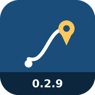
tuju 0.2.9
Historical 0.2.9, superseded by 0.2.10. Published 23 Nov. After rider feedback on organization and wasted space: the map is about 22% shorter, S11 and S61 sit in the empty left and lower areas, crossing hops drop from 9 to 3, walking links and notes keep clear of text, S11 and S61 outbound and return stops share one spine where GTFS coordinates are within about 130 m, and corridor 9 / 10 gains a return leg from GTFS trips 9-R02 and 10-R02. The red 4C and 5M out/return columns are not yet merged. Emulator checks per release workflow; physical phone and real GPS unverified.
SHA-256 48d471735fba75b6807e4048ed179b59b0d28f167420cfb3aa12c2092dcb73c3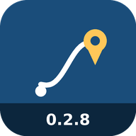
tuju 0.2.8
Historical 0.2.8, superseded by 0.2.9. Published 23 Nov. After rider feedback that parallel lines were hard to tell apart: the 7A overlay no longer merges with the 7E return column, the 5M shared section sits visibly beside the red 4C spine, the Grand Indonesia walking links move further off both red spines, the S61 and Central Park walking connectors get their own corridors clear of the route columns, the 4D return line steps off the corridor 6 spine, and the Flyover direction-switch walk starts clear of the 7E column. Route colors, stops, joins, enlarged notes, portrait layout, journey meter and optional GPS unchanged. Signed APK checksum, package, code 19, two location permissions, pinned signer and 0.2.8 badge verified. Emulator pinch/pan and journey-meter checks passed. Physical-phone installation and real GPS remain unverified. Walking entrances, pedestrian conditions, gates, crossings and fare continuity remain caveated.
SHA-256 d24cc9ec0de2cf1ba52e72646c3fbaafedb18191a6bd3dd7faf863a59247b175tuju 0.2.7
Historical 0.2.7, superseded by 0.2.8. Published 23 Nov. Enlarged central map notes and normal 16px walking/return notes without zoom. Eight schematic line hops/gaps distinguish nonconnecting crossings from real station joins; walking connectors no longer run through the enlarged notes. Tall portrait map, straight red 4C spines, purple 5M branches, all prior destinations, directional stops, journey meter and optional GPS retained. Signed APK checksum, package, code 18, two location permissions, pinned signer and 0.2.7 badge verified. Emulator pinch/pan, journey-meter and phone-size notes checks passed. Physical-phone installation and real GPS remain unverified. Walking entrances, pedestrian conditions, gates, crossings and fare continuity remain caveated.
SHA-256 d6c8086a8faef3273babdf0621e3f7976930a8ecfb57617dcd621604bca04cdetuju 0.2.6
Historical 0.2.6, superseded by 0.2.7. Published 23 Nov. Portrait combined map: straight red 4C spines, purple 5M branches, with S11 and S61 stacked below. Separate BINUS main-building and mall-extension markers use their own walking connections. Take 4C to Bundaran Senayan, a separate pedestrian transfer, then S61 to Forest Park; return S61 uses the different Mall stop. All prior destinations, intermediate stops, journey meter and optional GPS remain. Signed APK hash, package, code 17, two location permissions, pinned signer and 0.2.6 icon checked. Emulator pinch, pan and journey-meter tests passed. Physical-phone installation and real GPS remain unverified. Walks depend on the selected entrances; sidewalks, crossings, gates and fare continuity are not verified on site.
SHA-256 41944d007a37360755d0f776031d88fbfdb9ee665a239714c06c0ce600665d93tuju 0.2.5
Historical 0.2.5, superseded by 0.2.6. Published 22 Nov. The combined map adds both directions of S11 between Central Park and Serpong BSD, then an explicit 2.2 km / 29 min walk to The Breeze BSD. Pedestrian conditions remain unverified on site. Direct 4C to Grand Indonesia extends the shared 4C/5M spine through SMPN 8; its independent return joins the existing Megaria homebound spine. Intermediate stops, direction arrows, prior destinations, journey meter and optional GPS retained. Published checksum, package, code 16, two location permissions, pinned signer and icon badge checked by the release gates. Emulator pinch, drag and journey-meter tests passed, with both new destinations captured in the Android WebView. Physical-phone installation and real GPS remain unverified.
SHA-256 cc562438fc95538abb65345f0ebaf358c7dd1c7e0bf1baf9bbf515a5bdb623a4tuju 0.2.4
Historical 0.2.4, superseded by 0.2.5. Published 22 Nov. Fifth destination Bakoel Koffie (Cikini, Menteng): the combined top map rings the Farmasi RP Soeroso alighting stop on the existing 5M leg and draws the full homebound column - 5M from Kantor Pos Cikini to Megaria, same-stop change to 4C for Pramuka BPKP 1, intermediate stops from official GTFS trips 5M-R02 and 4C-R10 checked 22 Nov. Journey meter gained both homebound legs; page gains venue, getting-there and coming-back cards. Existing route geometry, timer and optional GPS retained. Published bytes, SHA-256, package, code 15, lowercase label, two location permissions and pinned signer independently checked by the release gates; emulator smoke passed. Actual phone install or upgrade remains unverified.
SHA-256 75797860babd8c3b69a06d9ab8bb26b17a5e619f8b72e3f358310f47ef6ea750tuju 0.2.3
Historical 0.2.3, superseded by 0.2.4. Delivered 21 Nov 12:16. Official IDSW access guide bundled offline, plus labeled LRT Rasuna Said marker, final JPO walk and Sunday Car Free Day warning on the top map. Wrapped venue text avoids the 5M spine. Published-APK emulator map-fit and offline guide checks passed; actual offline guide and live desktop/mobile map pixels reviewed. Existing route geometry, timer and optional GPS retained. Package/code14/lowercase label/two location permissions/pinned signer and published hash independently checked. Physical phone and real-ride GPS remain unproven; no battery claim.
SHA-256 a977decac4dcac3d2c148fb602769477dbd76f02cf4cdc6736c7d6ce05d86ab8tuju 0.2.1
Historical 0.2.1, superseded by 0.2.3. Offline map plus selected-stop journey timer and optional on-device GPS distance. GPS is off by default, asks location permission when enabled, and stops when the screen is left. Comparison uses operator GTFS timetable minutes and straight-line stop distances, not road distance or live travel times. Uncovered figures stay unavailable. Emulator UI/timer checks passed; real-ride GPS and physical phone unproven. Declares fine/coarse location; no INTERNET permission.
SHA-256 913e19ef70be18b2482ddd3b42b1cd693b5bdf3dcf8f01ead26210eec7b36764tuju 0.2.2
Published intermediate build with the offline official access-guide card, before the requested top-map addition. Superseded and not delivered. Complete 0.2.3 is still being built and qualified; use 0.2.1 as the last delivered APK. Published bytes, SHA-256, package, code 13, lowercase label, two location permissions and pinned signer independently checked. The post-publish catalog/registry check did not pass; that is separate from APK identity. No new physical-phone or real-ride GPS proof.
SHA-256 7cfb2db1fdf2115230ffc7f68063a717c70093475ec1bc3629e52b75af6b5381simak 0.1.0
Published0.1.0/code1 signed test APK. Bundled two-day IDSW2026 agenda, suggested learning guide, stars and local notes. Optional on-device contact-name similarity hints are not identity proof; no contact uploads. Declares READ_CONTACTS, SCHEDULE_EXACT_ALARM, USE_EXACT_ALARM, POST_NOTIFICATIONS and RECEIVE_BOOT_COMPLETED. Actual published bytes, hash, lowercase label and packaged versioned icon checked. Published APK passed synthetic emulator checks for day tabs, star/note persistence, guide, contact-permission denial and synthetic name matching. Published-APK emulator evidence also confirms exact-alarm re-arm after reboot and the reminder notification posting visibly after the due time. Physical-phone behavior and battery use unmeasured. Schedule updates require a new release.
SHA-256 b6ed4846856130aed2aed56b85f813b5c704e08b4cb48aeb10e52a7d0507dba9tindak 0.5.22
HTTP and HTTPS links in reminder titles and notes are light-blue and underlined, distinct from amber notes. Browser opens only after an explicit tap. Existing signer, permissions, pairing key, real feed and data preserved. Twenty native link and preservation checks passed; actual signed APK inspected. Physical phone screenshot confirms distinct links and the user confirmed tapping opens the browser on 20 Nov. Existing real reminders retained. Browser data stays separate.
SHA-256 192687cf5a3823aa747779a4e3c146898a630de2311bf3f89cdfca90ba7f2f21tindak 0.5.21
Six bundled fictional demo reminders/tasks, no demo feed/key/internet required. Real setup asks only for real feed URL; existing real cache, key and address kept. External-demo cache/address retained in local recovery preferences.17focused native preservation/render checks plus full release unit/privacy/candidate-byte gates passed. Update over Tindak0.5.20, not old Intodo. No new permissions, same signer. Physical phone/demo/real-sync retest pending; saving URL is not proof of applied sync.
SHA-256 d80c7953b087162298cc7bb0670e5c8d56215451154ca60ebafa13aa1b279027tengok 0.7.1
Historical 0.7.1 release, superseded by 0.8.0. Tap stored/deflated ZIP entries to view text, images, audio, MIDI or hex in memory, up to 16 MB per file and 100:1 compression with size and CRC checks. No temporary files or new permissions. Same signer.
SHA-256 a71ed1f4008f04be2e128285be7d4870370b81e2406ef508b30185000b311c45tengok 0.7.0
ZIP files show paths, declared sizes and encrypted-entry labels instead of the hex fallback. Read-only directory listing only: nothing is extracted or executed. Limits: 32 MB archives and 2,000 entries; no ZIP64, split archives or password opening. Existing viewers preserved. Signed prerelease APK, same Tengok signer, zero Android permissions. Synthetic parser tests and release checks passed. Physical-phone test pending.
SHA-256 d9d78f1d4cc459724c8cde7e4d18bb1226c1b0d1a43e9c63f1442dcac468b10etengok 0.6.1
Re-opening a file another app shared (like a bidik recording) from the recent-files list after its one-time share access lapsed no longer lands on an error with a hex offer that could only fail the same way. It now shows the same pick-the-file-again card as any other lost access, and tengok declares visibility of bidik's share provider so those files resolve at all. The file itself is never touched or copied. Same video player, game and viewers as 0.6.0. Still offline, still zero Android permissions. Signed prerelease APK; update in place, never uninstall or clear data.
SHA-256 dfd35b424c7bae586ad9dac6b0da62eea0558e521f7d58da9a339370d22ada2ftengok 0.6.0
Historical 0.6.0 video playback release, superseded by 0.6.1. Video files (mp4/mkv/webm/mov/3gp) open in a real player instead of the hex view. Variable frame-rate recordings play at the speed they were recorded: each frame's own timestamp is honored, the MP4 index is found wherever the muxer wrote it (including at the end of the file behind a 64-bit mdat size), sound starts on its own offset, and silent recordings with no audio track play fine. Fixes Bidik recordings being unusable in tengok. Proven on the emulator against byte-identical Bidik record-check CI captures, in the debug smoke and on the published APK through the real folder path. Still offline, still zero Android permissions. Signed prerelease APK; update in place, never uninstall or clear data.
SHA-256 99d5cd9d4afd40e308e4f826ceb7faec8e600b8a65e0b0ac197fb315cd514002tengok 0.5.1
Historical 0.5.1 zoom fix release, superseded by 0.6.0. On cantina2.mid Warm Pad the camera zooms out to 27dp for the wide passage around 176 seconds, then glides back. Signed prerelease APK; update in place, never uninstall or clear data.
SHA-256 8396197f0a56a30b1e9fb64591deed43e15fd5739dbf4aecfabedaccbe833783tengok 0.5.0
Historical 0.5.0 camera plan release, superseded by 0.5.1. Its repeated-adjacent-frame case could leave the camera at the narrow frame during a wide passage; fixed in 0.5.1. Signed prerelease APK. Update in place, never uninstall or clear data.
SHA-256 39486786be912b7a6c6c4fd115a3b4f76c0c747e720d2cbbde3646ad776d2424tengok 0.4.0
Published signed 0.4.0/code 15 test APK. Per-pointer piano handling and save-as conversion added. Two-pointer chord runtime passed synthetic MotionEvent dispatch on the emulator, not real touchscreen hardware; mid-hold dim visuals remain unproved. Converter SAF readback/cancel/error checks passed in emulator. Actual published bytes/icon/same signer checked, no Android platform permissions. Historically, the camera redesign was unfinished and not included in 0.4.0. Update in place, never uninstall or clear data.
SHA-256 e35c8b4dc40b63eae727b0f0810f2b5ab5af8b51e11ab87e437a48b4823619c2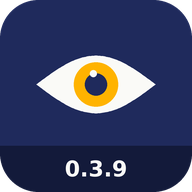
tengok 0.3.9
Previous signed release with target-reaching eased keyboard sweeps, no resume snap and struck notes continuing into the piano. Replaced by 0.4.0 multitouch and save-as conversion test release. Camera redesign is separate. Same signer; update in place, never clear data.
SHA-256 35e180f75335e88e85bdc10de5fcc605c6acd673aee0e9184ad70eb875a886d8tengok 0.3.7
Previous release. Synthetic glide frames did not prove physical-phone smoothness. Replaced by the 0.3.9 glide and note-continuation test release. Same signer, zero permissions, update in place. Conversion tools are not included.
SHA-256 b1f65ba588c843507509fd65b1c9cd278e4c7ab0d0c3fddb0c5eff12e5d28b71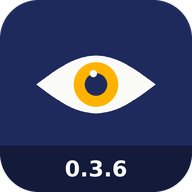
tengok 0.3.6
Sustained notes remain hittable until 400ms after their end, while Perfect stays within 100ms of onset. Judged hits have above-key sparks; plain touches stay distinct. Samples collapse after selection. Actual code11 APK/icon/checksum and unchanged signer verified; zero Android permissions. Emulator three-judged/zero-miss smoke passed, but the reported phone song, finger visibility and scoring need a physical retest. Each chord note still needs its own key press. Intermediate 0.3.5 remains in release history, not the current recommendation. Converters excluded. Update in place, do not uninstall.
SHA-256 32298db7f5f44c8229d421950ad88602fef25e30c8bedd24d723ebced0aee975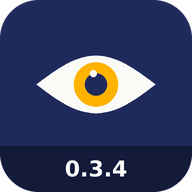
tengok 0.3.4
Signed0.3.4/code9 candidate, actual bytes/icon/checksum verified, zero Android permissions and unchanged signer. Current emulator/upgrade proof pending; no claim of fixed phone tap/audio behavior. Prior tap-cause hypotheses remain unconfirmed. Converters stay excluded.
SHA-256 d32cb7e51441928df917cd5429abea56641aefa35530859baf0b70086ad6b575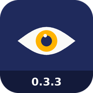
tengok 0.3.3
Test candidate for the reported phone tap issue. Code changes target parent touch interception and quick sideways wobble, but earlier old/new emulator checks both passed, so the phone cause and fix remain unconfirmed. User phone retest decides. Zero Android permissions; existing viewers/piano/rank/recent-file features retained. Converters excluded and kept on their branch. Upgrade-preservation proof pending separately, not claimed.
SHA-256 cc88c87a0e02e80c09cf15f591ee21b7b92edd5e0f54bbca302d8855f2dc81f6tindak 0.5.20
New com.vanipy.tindak package with redesigned check-arrow icon and0.5.20 badge. Separate install, not an in-place update from old intodo; old local setup is not migrated. Existing feed remains on the old pairing until a new public key is supplied and switch confirmed. Same signer, signed-byte package/version/icon checks and native tests passed. Physical-phone behavior unverified. Browser tasks remain separate, no phone sync or timed browser alerts.
SHA-256 9e847b49c210bc1546e3ae1a984833532c00e635fed085613b846f8bdbd56a4cjumpa 0.1.0
Historical signed offline people-notes test build. Demo data is separate from real records. Zero permissions. No Kunjung encounter handoff in this version. Physical-phone behavior untested.
SHA-256 02c69c0447d622ede1de3becc8e48749be258652417eddae481b58e7d59bfc59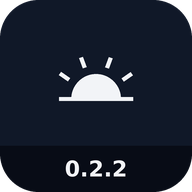
kokok 0.2.2
Dismissed, canceled and missed alarms move into collapsed History. Scheduled, ringing and snoozed alarms stay in the main list. No alarm records, pairing keys or scheduled times are deleted or reset. Same signer; permissions unchanged from 0.2.1. Compared with 0.1.4, optional Physical activity and network-state permissions were added in intervening versions. Sleep estimates stay off unless enabled. Direct signed 0.1.4-to-candidate API34 emulator upgrade preserved synthetic key/pairing/revision/sound/alarms, existing OS alarm rang, and actual snooze persisted through reopen. Physical API36 phone update and overnight behavior remain unverified. This APK does not activate earlier backup alarms. Optional sleep estimates stay off by default. Keep an independent backup. Update in place, never uninstall or clear data.
SHA-256 a56b16b1888643d6d154ddb07fe644839cbcfcb5ef62b97a77c0fb6eb76a988b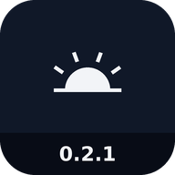
kokok 0.2.1
Fixes feed refresh resetting a locally snoozed next ring. New-version snoozes keep their time when included in newer feeds; identical scheduled IDs are no-ops. An already-active old-version snooze has no marker: confirm a quiet state before any feed update. This APK adds no earlier backups and does not change current alarm times. Actual signed0.2.0 in-place upgrade preserved synthetic pairing/keys/revision/alarm/sound, existing alarm rang and real snooze persisted through original/mirror/reopen. Nine state tests passed. Physical-phone/overnight behavior and new cold-boot proof remain unverified. Optional estimated sleep stays off by default, no REM/medical or automatic wake changes. Keep an independent backup. Update in place, never uninstall or clear data.
SHA-256 7188f55d6c24fe32ed42cf2617e0a48132729f18b65c5e3de0113928c8fd57b9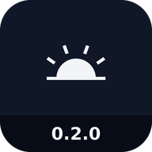
kokok 0.2.0
Optional phone-based estimated sleep, off by default, requires Android10+ and compatible Google Play services. No REM, stages or medical claim; no microphone, camera, location permission or automatic alarm-time changes. Sleep records stay private; explicit clipboard summary only. Exact signed0.1.4 upgrades passed syntheticAPI34 tests for both chosen and default sound, cold pre-unlock ringing, preserved pairing/keys/alarms/sound and old-code rollback compatibility. Physical-phone overnight reliability and provider accuracy remain unverified. Keep an independent backup alarm. Update in place, do not uninstall or clear data.
SHA-256 8550ba9651f5ee2bbd5ed08c893d8121a4331f33bf196648b1c879d631a60ce5kokok 0.1.4
Preview the current alarm sound for up to 10 seconds, choose a device alarm sound for kokok only, or return to the phone default. Default unchanged until an explicit choice; no system-volume change. Existing keys and alarm records retained. Experimental alarm delivery and local scheduling are not a guarantee of exact timing or reliability across every device state. Keep an independent backup for important wake-ups.
SHA-256 1d2e94f5f1be0ee2365cc2a87061faac874c75cd08ceffc40ec4f62ce0164f26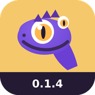
sanggup 0.2.1
Historical 25-path release. Synthetic demo 0.2.0-to-0.2.1 upgrade retained done stages, streak and pending sign-off. That proof does not establish 0.2.2 or a user-phone upgrade. Browser and Android progress stay separate. Update in place, never clear storage.
SHA-256 248fab2f407150e4b85f68dd2ac86cac560f740acb0c0f7d323d9f5f03ba0cb2sanggup 0.1.4
25 tiles in a5x5 grid retain all paths through seven approved groupings, with Career moves, Business frameworks, shared-skill labels and deeper stages. Actual signed grid inspected.Signed0.1.3-to0.1.4 synthetic upgrade retention and post-publication checks passed; not yet user-delivered. Marketing is not included and further lessons remain in progress. Zero Android permissions. Browser and Android progress stay separate. Widget intermittency has no proven cause; physical-phone behavior remains unverified. Learning progress is not qualification or income proof. Update in place, do not uninstall or clear data.
SHA-256 a4ddc6b131f874329ad309ebee1e9cda0ba550ad39ae97187a48ac6453c6d4fesanggup 0.1.3
30 offline skill paths in a5x6 grid. Signed0.1.2-to0.1.3 synthetic upgrade retention passed. Browser and Android progress stay separate. Widget checks include intermittent failures with cause unproven; physical-phone behavior remains unverified. Newer25-tile grouping is in0.1.4, not these bytes.
SHA-256 fa468f7d4bc98adc2030d30d2c913586a621c4faccfc2346ba5888a6d32de3bd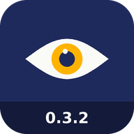
tengok 0.3.2
Finger-sized piano keys with automatic panning and sideways look-around drag, local recent files and a live/final game rank. Recent-file removal clears only the list, not the file; access-lost handling was inspected. Offline, zero Android permissions, no automatic file or diagnostic uploads. Published0.3.1-to0.3.2 synthetic upgrade retained a remembered folder and its Android grant via the real picker. Published piano width/panning/non-striking drag checks passed. Full published-APK folder/game/rank/recents and upgrade suite passed after a test-log accounting fix. Not yet user-delivered. Physical-phone and USB keyboard behavior remain unverified. Read-only folder explorer and existing MIDI/image/audio/text/hex limits remain; other viewer formats are not included.
SHA-256 e13e258e1bbe4bcd4922d909dba732a5ed98ad2791b1029a026b76c6148a8db5tengok 0.3.1
MIDI game with late-note hints, jump, draggable clock timeline, played notes leaving the lane, a fresh round at the end and speed-adjusted scoring. Read-only chosen-folder explorer and MIDI, image, audio, text and hex views retain their format limits; no delete, rename or move. Published-APK emulator checks passed for real folder access and game runtime. Physical-phone and USB keyboard behavior remain unverified. Diagnostics stay local and are shared manually, never uploaded automatically.
SHA-256 44ed694f028b89ec72678abd0c5ad301023941829d98c0aa641154e6fe8bc52csanggup 0.1.2
25 offline starter paths with a5x5 app grid, including Content creator and expanded Community building. Signed0.1.1-to0.1.2 upgrade retained synthetic progress/streak; post-publication checks passed. Widget tests include passes and intermittent failures under investigation, cause unproven. Physical-phone behavior unverified. Browser/Android progress stays separate, not competency or income proof. Newer web content is separate from these APK bytes.
SHA-256 4aef2e08c86674ffd8204789520a82364cb970313abfab0a9396df944a101240tuju 0.1.9
Shared10/7F station areas drawn once with opposite arrows and branches for distinct stops. Shared4/6 spine and7E direction-specific stops retained. Actual APK icon badges corrected to0.1.9. Emulator checked, not physical Samsung-tested. Existing fare/access,7F hours and Gojek uncertainties retained.
SHA-256 0e02a180fb6c5d6fd4515028046de073b421618b799ecf15591e3f71a2f2e5cdtindak 0.5.13
Historical com.vanipy.intodo package. Home-screen widget and app for reminders and todo lists, with shared lists over Delta Chat. Experimental build.
SHA-256 f01e87543ff14c4ac403334467f7e03d86d5e09b400fcb2bbdee39d099911ff1kemas 0.3.2
Readable zone/progress at2-3columns; before/after photos remain in wider/taller layouts. Responsive bitmap budget fixed to avoid receiver crash. Emulator-qualified, not Samsung-tested; package, signer and data preserved.
SHA-256 a3d8dcfb94eb2002149ffb20188f4463bf54218e2295c286cdd6601759d5c987jin 0.5.2
Clarifies that the publish button and confirmation publish a new mini app (.xdc) version to chats, not a Jin app update. Square buttons retained. Host tests and supplied render checked; real-device validation remains pending. Two-way Bidik integration is separate and not built.
SHA-256 d518a324760c39e65575ee161431cae0107385c7e0625cb4098ae80f4253569a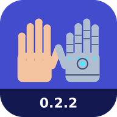
onda 0.2.2
On-device sensors and small-model demos for Android, built for an Edge AI talk.
SHA-256 b3e6465a55c50ae9cfcc5191ba8613908c9b029e9f654d5e3202f1759caf3276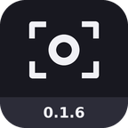
bidik 0.1.6
Historical 0.1.6 release, superseded by 0.1.9. Capture/game-audio, optional mic, motion overlay, preview/delete, trim and loop-detection had synthetic or emulator checks; real motion sensitivity, intended-screen outcome and real clip/GIF behavior remained unverified. Existing bytes and releases retained.
SHA-256 9f8033a3c3ce89199dcad835ac837b73e1acb170709906ddea26f6a7d32ee14f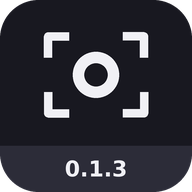
bidik 0.1.5
Historical published0.1.5 APK. Preview/delete, trim and game-audio controls; real-clip cut boundaries and on-device GIF bytes were not verified. Later0.1.6 source and queue-ID integration are separate. Existing bytes and releases retained.
SHA-256 1bc75487d80d8a63a476106d531e0486ee6212fc80958b05ad543931cf168fb8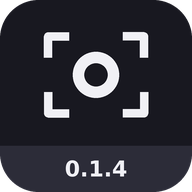
bidik 0.1.4
Delayed start, auto-stop, status/navigation-bar crop and looping-GIF export with manual trim fallback. Main controls stay on the home screen, other actions in a left drawer. Emulator recording tests passed; physical Samsung A24 capture behavior is unverified. Loop quality depends on the clip; no perfect-loop guarantee. Jin client is inert, no cross-app message flow.
SHA-256 a7e126570a8ec8fdf75b49cf4cdc52aa23a9924e5ce2b69ea2e9e430ea2d6966menit 0.1.2
Estimates how much phone time goes to AI apps.
SHA-256 cad39add8845556af277845453e1eaafb8b787e17d51162d1900bcf2cff07f6ftumbuh 0.1.1
Sorts commitments, inbox, space and people you lost touch with. Entries are added by hand. Offline, no permissions, no reminders, no inbox or contact access, nothing is sent. Drafts are text you send yourself. Tested on an Android emulator with synthetic data, not on a real phone. AGPL-3.0.
SHA-256 8f733d2ca26e3511e70debbfa0ca11387b9fc793d9bf0d94223c294cfc77559adenyut 0.6.5
Notes and reminders can work offline without a model. Local-model loading is disabled in this build; no model was loaded and no chat account was provisioned for qualification.
SHA-256 334430b0146e9dc79a46c3ed416c5f9978ebf6a79cd6ee0a4465ad0f9c29190fkemas 0.2.3
Cleaning accountability app. Experimental test build.
SHA-256 971f941af9bd818aa86a17a25df025ea2faba68baa17aa9301785859f23de575tindak 0.5.19
Historical com.vanipy.intodo package before the requested actual Tindak identity reset. Label-only rename, same old setup/data. Not an update or identity match for the new com.vanipy.tindak package; old bytes retained. Physical-phone behavior of0.5.19 unverified.
SHA-256 b5001fe2671cb3f6790299136c4d6e2ab1cbe5930b74823d634f9474cd0dbb06tindak 0.5.18
Historical com.vanipy.intodo package. Separate real and synthetic Demo feeds with independent saved items and freshness. One-time setup retains the existing key. Real/Demo app and widget layouts checked on Samsung. Automated tests passed; this does not prove every race/cache edge.
SHA-256 796da494130d2fe4769674f339068276cd070650762da05d05fb2bbf372a61e7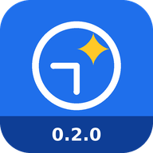
menit 0.2.0
Phone-usage totals and a resizable home-screen widget. This older build predates the all-sizes compact revision. Emulator checks are not proof on a physical Samsung.
SHA-256 4272e681d30199936640c9c371cd08be7de1c868bd9eaa5f920995707a1066c0tumbuh 0.2.0
Offline manual commitments, inbox, space and people, with a home-screen widget. No inbox/contact access or automated sending. This delivered build predates the pending compact revision; not phone-tested.
SHA-256 169abc095777deb8240087f97c8d84312016e72473125debe610e259b8d1ed5adenyut 0.7.0
Offline notes and reminders with a home-screen widget. Local-model loading remains disabled. This delivered build predates the pending compact revision; no model/chat account provisioned or phone proof.
SHA-256 07d2c5bf351035593880198ad2121b8a0159ae3bb47b268d767306ddedd2e0aa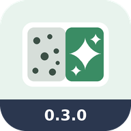
kemas 0.3.0
Cleaning accountability with a home-screen widget. This delivered build predates the pending compact and expanded-mode correction. Not phone-tested.
SHA-256 482a4f8c46161f038db9b521aa51acc8d562492640afb6729b08d1526e450616saku 0.1.1
Synthetic entries only. Not for real passwords, accounts or keys; no real vault, network, sync or Autofill. Development checkpoint; license selection is pending. Full suite: 13 tests, one known failure, KdbxSpikeTest.readsPykeepassRoundtrip.
SHA-256 cad32905084c22ad7f87beca20aaf1012085dcf6eeb08253eaba437380c4918dtindak 0.5.14
Historical com.vanipy.intodo package. App and widget for reminders and todo lists. Same com.vanipy.intodo package, signer, data and paired feed. Widget tap routing checked on an emulator; post-tap content rendering remains unverified and was explicitly bypassed. Not Samsung-tested.
SHA-256 392c257e7e862038863d5f90076269d2d480a11993772dd7f1f809ea8bdd7c1dtuju 0.1.0
Bundled busway overview map with pinch-to-zoom and drag-to-pan. Offline map only: no live directions, journey planning, fare calculation or service updates. Direction qualifiers and fare uncertainties stay visible. No permissions. Released APK not installed on a physical phone.
SHA-256 3e466703b4ab3ff7aeb9579025a5a55bde21795e987743da86294ca5d76c8cc3tindak 0.5.16
Historical com.vanipy.intodo package. Current names and update outputs use intodo only. Same package, signer, feed and list data. Old download compatibility dropped. Rename-only: useful 2-3-column widget content correction is in progress. Post-tap content rendering and physical Samsung behavior remain unverified.
SHA-256 687908c23385118c762ee684bb4c9b9c93cededc11d3f1f7ce89afa6cd837c4amenit 0.2.1
Phone-usage totals and responsive compact widgets. Existing package, signer and permissions retained; emulator qualification is not Samsung install proof. Useful 2-3-column widget content correction is in progress.
SHA-256 b5576b2cc24f3cbe387a9a2e57f03f9fa0acd5c2a6df3fc330276a7a9282931ctumbuh 0.2.1
Offline manual commitments, inbox, space and people, with responsive compact widgets. No inbox/contact access or automated sending. Not verified on a physical Samsung. Useful 2-3-column widget content correction is in progress.
SHA-256 461f7d2d168eb906e3fd3a5df6d6e15e5d9a91d8b84314da05eef7693e82af1ddenyut 0.7.1
Offline notes and reminders with responsive compact widgets. Local-model loading remains disabled; no model/chat account provisioned or Samsung install proof. Useful 2-3-column widget content correction is in progress.
SHA-256 8ffada80af5e09d750f54e9223275f0970cd1d0e21c1a7bbdc81143644f39f4bkemas 0.3.1
Cleaning accountability with responsive compact and expanded widget modes. Existing package and signer retained; not verified on a physical Samsung. Useful 2-3-column widget content correction is in progress.
SHA-256 1b078b263a31313458211d9b52f6660448c869bf5d8e48de1dd79b2a3dd6dcfd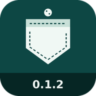
saku 0.1.2
Not for real passwords, accounts or keys. Static locked-status widget and quick-open only. Experimental local vault with a known KdbxSpikeTest.readsPykeepassRoundtrip interop failure; not all tests pass. DeltaChat sync is unfinished. No production-safety or physical-phone claim. Useful 2-3-column widget content correction is in progress.
SHA-256 32ded85de300b2f567f06f5deb13eeef769c4d479d651c8adb7a3152b16420dfdenyut 0.7.2
Offline notes and reminders. Useful next reminder and note count at2-3columns. Emulator-qualified, not Samsung-tested. Local-model loading remains disabled; no chat account provisioned by this update.
SHA-256 e2116950649596b21ea4f67b7882de661067ceaaad3bbd7d0d7f689431aaa577tuju 0.1.1
Offline busway map with all selected outbound intermediate stations from an operator GTFS snapshot, pinch-to-zoom and drag-to-pan. Existing direction, transfer and fare caveats remain. No live bus guarantee or physical Samsung proof. Same package/signer, no permissions.
SHA-256 d422952ef3ad3fdbdbcd23be8df81c69c644c3853bea8342d92e57871e6df6b9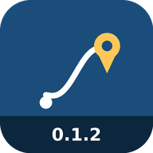
tuju 0.1.2
Offline corrected overview and closeup. Gabus stays far-side beyond bridge and venue; Phe is beside the venue. APK map matches source 311cd12. Same package/signer, no permissions; not physically phone-proven. Website fare notes are newer: this 0.1.2 APK still contains the earlier uncertainty wording.
SHA-256 144ae3a119a05887f049e9a633ac2624bd8fc03fd00ece1740f5a6988f741bdbtindak 0.5.17
Historical com.vanipy.intodo package. Useful list rows at 2-3columns; repeated same-widget resizing preserves all six synthetic items without Loading rows in Android15 emulator. Same package, signer, feed and list data. Samsung behavior unverified; no reset or feed switch.
SHA-256 e17971ebca35e8dfb12499d3911a23e8000ab627626bc3c84a0cf2a006bc6f99tuju 0.1.3
Offline corrected maps with fare notes based on firsthand clarification: 4 to 6 has no extra fare; the Flyover link stays inside the paid area with no exit or extra fare; 6 to 7E requires an exit, very short walk and payment again. Not independent operator-policy verification. Geometry unchanged. Same package/signer, no permissions. Emulator-tested, not Samsung-proven.
SHA-256 7e5eab7a23f3865e1d858ed346cd3f94816385efbe5969ce967e25b560217bdf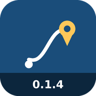
tuju 0.1.4
Plaza Festival added to the offline map. Routes 4 and 4D share one first-ten-stop trunk through Halimun, then 4D branches to Rasuna Said. Prior firsthand fare notes preserved. Same-source debug Android WebView checked on an emulator; signed APK not phone-tested. Same package/signer, no permissions.
SHA-256 80cb319a1ab9744e65c1de7bb096eab35585e2b8deeef2195f11e1c484e12182tuju 0.1.5
Both Arkadia return options are now drawn in the offline map: Arkadia-side 7E to Ragunan, 6 to Galunggung, 4 to Simpang Pramuka 1; or far-side Gojek to Flyover Raya Bogor, 7F to Kayu Putih Rawasari. Outbound routes, shared4/4D trunk, destinations and fares retained. Same-source debug Android emulator passed; not Samsung-tested. Ragunan access/fare continuity, differing7F hours and Gojek fare/time remain unverified.
SHA-256 5c08de849e0a72fe13fcd4fbb8869e0a60ebc274bf9dea7a1cbadbfb24e6cf53tuju 0.1.6
Current0.1.6 release puts outbound and returns on one canvas, but shared4/6/7E sections are still separate verticals. A single shared-spine correction is in progress. Emulator pinch/drag passed; not physical Samsung-tested. Ragunan access/fare continuity, conflicting7F hours and Gojek fare/time remain unverified.
SHA-256 a79fede35f44953af1b8349a5abdabdb9abc20aaef90dd074303eb4a24dfd0cd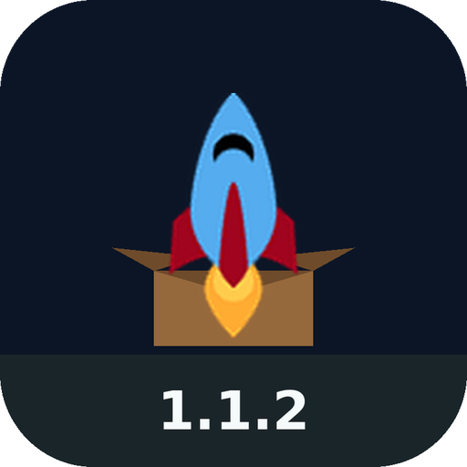
unggah 1.1.2
Pushes a ZIP to a chosen GitHub repository over SSH. New com.vanipy.unggah identity installs separately from the previous app. Existing settings are untouched; backup/import settings and set up a new SSH key as needed.
SHA-256 3b6a25c03e4423c52a52da5500645b6402efc80a5d6c56c1e0fd5616ff23132dtengok 0.3.0
MIDI falling-note game, on-screen piano and USB MIDI input, plus a read-only folder explorer for a folder you choose. No delete, rename or move. Existing MIDI, image, audio, text and hex views retain their format limits. Emulator UI and function checks passed; real USB keyboard behavior and version 0.3.0 on a physical phone remain unverified. Diagnostics stay local and are shared manually, never uploaded automatically. Packaged launcher icon reads 0.3.0.
SHA-256 d47a2fb2709166da1959a07c233bba770b4cc2e7b47ea6b133deccf1e6717be4sanggup 0.1.1
20 offline starter paths and animated Sang. Lowercase name/family badge and short widget with clear corner spacing shown on Samsung. Debug host checked animation, practice-to-streak and nominal/minimum/tall sizes. Signed0.1.0 to0.1.1 retained a synthetic1-day streak on API34. Exact launcher grid metadata not measured; browser/Android progress separate, not competency proof.
SHA-256 6d18deac4b7ecc7298ff8655b1b79350495d6e786a5d2cb8a575bec0813465c9kapan 0.1.0
Two audience tabs (developers, moviegoers) with the next developer event and next film or festival, each counting down on a 1x1 circular widget; a larger widget lists both. Data refreshes from the vanipy.com/kapan site JSON at most every three hours; last good data is cached offline. One permission (INTERNET). Checked by unit tests and static layout renders on the phone-width web view; not yet run on a physical phone.
SHA-256 6c226cbd5674e57f21e10c9fe2ad47611c345412075971583734a1a98b16de95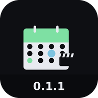
kapan 0.1.1
Audience tabs now show a clearly selected state (0.1.0 made neither look active). Event cards show the organizer. The moviegoers tab leads with big releases, anime and game adaptations; festivals and regular screenings sit in their own section. Two tabs (developers, moviegoers), 1x1 circular countdown widget plus a larger two-row widget, data refreshes at most every three hours with offline cache. One permission (INTERNET). Checked by unit tests and static layout renders; tab styling not yet verified on a physical phone.
SHA-256 4a97a5ab36eb1c7f1f0bf5cff232f3720658d59467d76f4d48123e02f38de9cdkapan 0.2.0
Historical 0.2.0, superseded by 0.2.1. On a phone that had fetched before care.json existed, the your-countdowns panel stayed hidden and the widget showed generic items. Countdowns now follow what the maintainer cares about: a hand-picked countdowns section on the site and a your-countdowns panel in the app tick down hosted and going events plus picked films (care.json on the site, public titles and dates only).
SHA-256 8fc0b69039d8e8678ba9811afdd1c21b1ddee796123d81e04c328c6ae4d9b743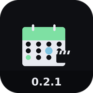
kapan 0.2.1
Historical 0.2.1, superseded by 0.2.2. The large widget listed only the first event and film pick, dropping the rest. Fixes the missing countdowns seen on a phone with 0.2.0: the app and widget now fetch once when no picks are cached, so the your-countdowns panel appears.
SHA-256 4691664d1b1db20172c997a0c744b44bfcf2dff9a08f5f61f387144e415d0bad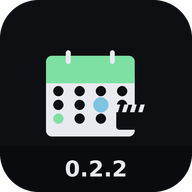
kapan 0.2.2
Historical 0.2.2, superseded by 0.2.3. The widget listed at most five picks, silently dropping the rest once a sixth was added. Widget now lists every pick (up to five), each with a days-and-hours countdown ('2d 10h', under a day '20h') as the owner asked, replacing the two fixed rows that dropped Build Club, PyJogja and Doomsday.
SHA-256 fb38554a712c8566cbce7d67b099e49ffefece985ac905eb2ff911e0ed0b5abakapan 0.2.3
Historical 0.2.3, superseded by 0.2.4. The app screen did not scroll on a physical phone and the countdown panel silently capped at five picks. The widget is now a scrollable list with no cap: every pick, sorted by date, and any row past the visible area is a swipe away inside the widget (0.2.2 dropped the sixth pick silently).
SHA-256 9ed85fefd581091a0e4d3e52364f91d7f3e2589ee5cb58aa2caaf56a9a39e44ekapan 0.2.4
Historical 0.2.4, superseded by 0.2.5. Fixes on-phone findings: the whole app screen is now one scrolling page (0.2.3 stayed stuck at the REFRESH button on a real phone), and the YOUR COUNTDOWNS panel lists every pick with no cap (the sixth pick was dropped silently).
SHA-256 871f2a078da0da0bd493b72c2821a57e9c3dbf3a32537ece7690fc2dcf9b6fc2